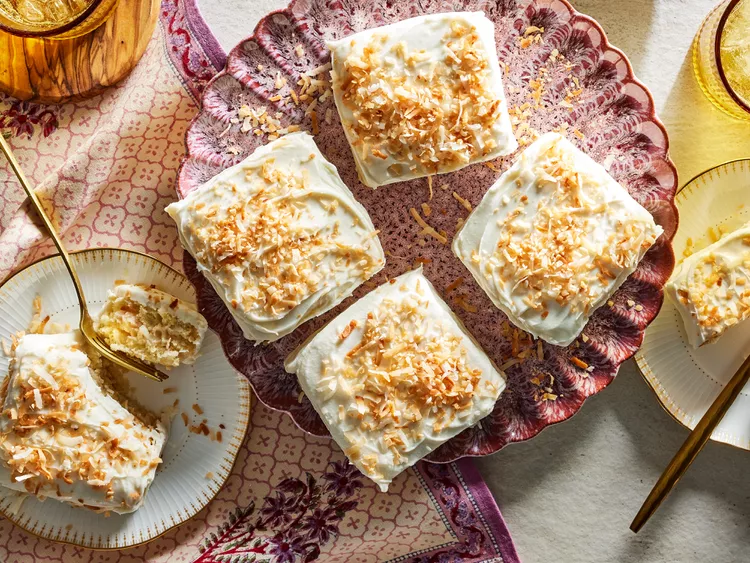

Coconut Dream Snake Cake

Description
If you love coconut, this little cake is a dream come true. Both creamy and soft with a little bit of coconut chew, this starts with a thin layer of fluffy coconut cake (that’s honestly delicious all on its own). A thick layer of decadent coconut custard dresses it up further, finished with a thick cream-based glaze that provides a glossy surface and drips beautifully down the sides of each cake.
Ingredients
- 2 cups flour
- 2 teaspoons baking powder
- 1 teaspoon fine sea salt
- 1/2 cup plus 2 tablespoons unsalted butter, at room temperature
- 1 ¾ cups white sugar
- 4 eggs
- 4 teaspoons vanilla extract
- ½ teaspoon coconut extract
- 1 cup buttermilk, at room temperature
- 1 cup sweetened shredded coconut
- 1 (13 ounce) can full-fat coconut milk
- ½ cup whipping cream
- ¼ cup cornstarch
- 4 cups toasted sweetened shredded coconut
- 5 ounces vanilla-flavor candy coating (almond bark), chopped
- 4 cups powdered sugar
- ¼ cup light corn syrup
- 4 to 6 tablespoons hot water
Steps
- Position rack in center of oven and preheat to 350°F. Coat a 9x13-inch baking pan with cooking spray. Line bottom of pan with parchment paper and coat parchment with cooking spray.
- Whisk together flour, baking powder, and ½ teaspoon salt in a medium bowl.
- In the bowl of a stand mixer fitted with a paddle attachment, beat ½ cup butter and 1 cup white sugar at medium speed until light and fluffy, 4 to 5 minutes. Add 2 eggs, one at a time, mixing at medium speed and scraping bowl well after each addition. Mix in 1 ½ teaspoons vanilla and the coconut extract until combined.
- Add about one-third of flour mixture to mixer, and mix at low speed until combined. Mix in half of buttermilk. Scrape bowl well. Repeat, alternating between flour mixture and buttermilk, until both are fully incorporated and batter is smooth. Mix in 1 cup sweetened shredded coconut.
- Pour batter into prepared pan and spread in an even layer. Bake until cake springs back lightly when touched in center, 20 to 25 minutes. Transfer pan to a wire rack and let cool completely.
- For custard, bring coconut milk and cream to a simmer over medium heat in a medium saucepan. Meanwhile, in a medium bowl, whisk together cornstarch and remaining ¾ cup white sugar and ½ teaspoon salt. Whisk in remaining 2 eggs until well combined.
- When coconut milk mixture comes to a simmer, whisk about one-fourth of the hot liquid into egg mixture. Add egg mixture to saucepan, whisking constantly to combine.
- Cook custard over medium heat, whisking constantly, until mixture thickens and big bubbles break the surface, 3 to 4 minutes. Remove from heat and whisk in 1 ½ teaspoons vanilla and remaining 2 tablespoons butter.
- Strain custard through a fine-mesh sieve into a medium bowl and stir in 2 cups toasted coconut. Cover surface of custard with plastic wrap. Let cool 15 minutes at room temperature, then transfer to refrigerator to cool completely.
- Invert cooled cake onto a cutting board. Remove parchment paper. Use a long serrated knife to cut cake in half horizontally to create two even layers. Spoon cooled custard into center of bottom layer; spread evenly, then add top cake layer.
- Cover cake loosely with plastic wrap and freeze until firm, at least 2 hours or up to 4 hours.
- Use a long sharp knife to cut cake into 12 even rectangles. Line a baking sheet with parchment paper, place a wire rack on baking sheet, and arrange cake pieces on rack.
- For fondant, microwave almond bark on High in a small glass bowl, stirring every 20 seconds, until melted and smooth. In a medium bowl, whisk together powdered sugar, corn syrup, 4 tablespoons hot water, and remaining 1 teaspoon vanilla. Whisk in melted almond bark. Whisk in up to 2 tablespoons more hot water, 1 tablespoon at a time, to reach desired consistency.
- Spoon 3 tablespoons fondant over each cake piece; use a small offset spatula to spread in an even layer, allowing excess to drip off. Immediately garnish cakes evenly with remaining 2 cups toasted coconut. Chill in an airtight container until ready to serve, up to 4 days.